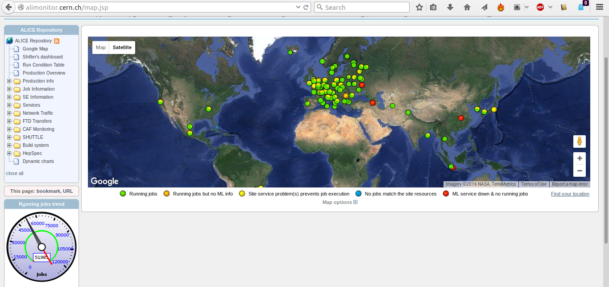

Running on Grid
The Worldwide LHC Computing Grid, usually simply referred to as Grid, is a global collaboration of computer centers. It has been up and running since 2002, to provide resources to store, distribute and analyze the petabytes of data that are generated by the LHC.
On the picture below, from http://alimonitor.cern.ch/map.jsp, you can see the distribution of computing centers that are working for the ALICE collaboration. We will the Grid to run your analysis on a larger scale than your laptop can provide.

To run your analysis on the Grid, all we need to do is expand our steering macro a little bit. In this section, we will explain how.
Configuring the AliEn plugin
In order to run your analysis transparently either on your local computer or on the Grid, we will use the AliEn plugin. The plugin hides a lot of complex operations that have to be performed in order to run your analysis on Grid, e.g.
- Using all existing types of input data to be processed (root files, raw AliEn collections or XML collections) detecting their type automatically;
- Generate XML collections corresponding to requested runs and/or data patterns;
- Automatically detect presence of tags in input data and allow using tag-based cuts in a very simple way;
- Automatically connect to AliEn (generate a token if needed)
- Generate automatically: JDL, analysis macro to be run in grid, execution and validation scripts according a simple to understand user-driven configuration;
- Copy all needed files in user's AliEn space and submit the job automatically;
- Start an alien shell to allow inspecting the job status;
- Do automatic output merging and terminate the analysis tasks.
The implementation of the plugin is for the Alice Environment is provided in the class AliAnalysisAlien. In the following code snippet, you can an example of how the plugin is created. These lines would go into your runAnalysis.C steering macro. Read through the code and the comments, and make sure that you understand what happens in each line.
// create an instance of the plugin
AliAnalysisAlien *alienHandler = new AliAnalysisAlien();
// if our class relies on code that has to be compiled, then we need to tell the Grid nodes
// where the headers can be found
alienHandler->AddIncludePath("-I. -I$ROOTSYS/include -I$ALICE_ROOT -I$ALICE_ROOT/include -I$ALICE_PHYSICS/include");
// here we tell which source files need to be copied to the Grid nodes
alienHandler->SetAdditionalLibs("AliAnalysisTaskMyTask.cxx AliAnalysisTaskMyTask.h");
alienHandler->SetAnalysisSource("AliAnalysisTaskMyTask.cxx");
// here we specify which version of aliphysics will be used on the Grid nodes
// only specificy the AliPhysics version, other dependencies (AliRoot, ROOT, etc)
// will be resolved automatically
alienHandler->SetAliPhysicsVersion("vAN-20160330-2");
// here we specify where the input data of our analysis is stored
alienHandler->SetGridDataDir("/alice/data/2011/LHC11h_2");
// and here we specify a specific pattern of filenames
alienHandler->SetDataPattern("*ESDs/pass2/AOD145/*AOD.root");
// here we set the run prefix: use '000' for data, or nothing for MC
alienHandler->SetRunPrefix("000");
// specify the runnumber to be analyzed. you can call this function multiple times with
// different runnumbers
alienHandler->AddRunNumber(167813);
So far, we have defined the following things
- Which input data has to be analyzed;
- Which AliPhysics version has to be used;
- What kind of analysis sources have to be used.
These are options that you likely have to change very often. However, there are many more analysis details that we can provide:
// number of files per subjob, this specifies how many input files
// each Grid node will analyze. For slow analyses, you might want to
// lower this number
alienHandler->SetSplitMaxInputFileNumber(40);
// the TTL is the 'time to live', which specifies how long a job can run, in seconds
// the longer you make this time, the lower the jobs priority will be. However, if the job doesn't
// finish within its TTL, it will be killed, so choose a reasonable number
alienHandler->SetTTL(10000);
// do you want to create a subfolder in which the output of each runnumber is stored?
alienHandler->SetOutputToRunNo(kTRUE);
// do you want to keep your jobs log files ?
alienHandler->SetKeepLogs(kTRUE);
// we can specify that we want to, later on, use Grid to also merge
// our output. to enable this, we will set 'SetMergeViaJDL' to kTRUE
alienHandler->SetMergeViaJDL(kTRUE);
alienHandler->SetMaxMergeStages(1);
// define the output folders, and give them a sensible name
// jobs *cannot* overwrite output, so make sure that
// folders with names as these do not yet exist in your AliEn space
alienHandler->SetGridWorkingDir("myWorkingDir");
alienHandler->SetGridOutputDir("myOutputDir");
// lastly, we give names to the automatically generated analysis scripts
alienHandler->SetJDLName("myTask.jdl");
alienHandler->SetExecutable("myTask.sh");
Test of full mode ?
We are nearly ready to launch our analysis on Grid. But before we go 'full blast' and use thousands of CPU's, we might want to do a test run to make sure that everything is configured correctly (and to make sure that we do not misuse ROOT's streamer, which will be covered in a later section).
To test your Grid analysis, we can specify to the plugin that we want to go for a test run, rather than launching a complete analysis. In the code snippet presented below, let's assume that the variable gridTest is set to kTRUE. As you can see, we specify to the plugin that we want to run in test mode. We also specify that we want to run over one test file (if you want to run over more test files, you can increase this number).
// connect the alien plugin to the manager
mgr->SetGridHandler(alienHandler);
if(gridTest) {
// speficy on how many files you want to run
alienHandler->SetNtestFiles(1);
// and launch the analysis
alienHandler->SetRunMode("test");
mgr->StartAnalysis("grid");
} else {
// else launch the full grid analysis
alienHandler->SetRunMode("full");
mgr->StartAnalysis("grid");
}
Ready to go?
When you run an analysis in test mode, a Grid environment is simulated locally for testing. Input data is downloaded from the file catalogue, following your configuration of the analysis plugin. After this, your analysis is executed. Running in test mode is an excellent way of convincing yourself that you have set up the plugin correctly.
Once your analysis test is finished, and you are convinced that your analysis output looks sane, you can submit your analysis to the Grid nodes. To do this, simply look at at the code snippet above, and assume that the variable gridTest is set to kFALSE.
Create AliEn legacy token!
Only ALICE members with a valid registration can submit jobs to the Grid and access the ALICE data. To identify yourself as an ALICE member, you will have to make sure that you have a valid token prior to launching your Grid jobs, be it in full or in test mode. If you are using AliEn legacy, then you need to obtain a token manually. If you are using JAliEn, then the token will be obtained automatically.
$ alien-token-init <username>
if all is fine, you should be prompted for your password, and see something like
=> Trying to connect to Server [0] root://pcapiserv03.cern.ch:10000 as User <username>
...
Creating token ..................................... Done
Your token is valid until: Thu Apr 7 15:23:52 2016
after this, you are good to go, and can launch your analysis by executing your steering macro
$ aliroot runAnalysis.C
Merging output on Grid
You can check the progress of the jobs that are running on Grid by going to (http://alimonitor.cern.ch/map.jsp)[http://alimonitor.cern.ch/map.jsp] and clicking on the tab My Jobs, at the top left of the page. When all your jobs are finished (we will later, in the section AliMonitor look at tracing your jobs in more detail), you are of course interested in looking at the output that they have produced. However, this output is stored as thousands of files, scattered over multiple job sites. To obtain one, single file as output of your analysis, we need to merge all these thousands of files.
Merging via JDL
The easiest way to merge your output is using the MergeViaJDL option that the plugin provides. Using this option will allow you to submit special merging jobs, which run on the Grid nodes and merge your output files. To enable merging via JDL, you have to configure your plugin as follows, before you start your analysis:
alienHandler->SetMergeViaJDL(kTRUE);
alienHandler->SetMaxMergeStages(1); // just one step
....
mgr->SetRunMode("full");
This will prepare the plugin for writing merging jobs, when your analysis is done.
More than on merging stage?
By specifying
alienHandler->SetMaxMergeStages(1);
we tell the plugin that all output files can be merged in one go.
If your output files are quite large, you might want to increase the number of merging stages by specifying a larger number here: this will tell the plugin that we want to merge in multiple, consecutive stages.
When all your normal analysis jobs have finished, we want to launch the merging jobs to Grid. To do this, we again make a small modification to our steering macro, and change the run mode from full to terminate:
alienHandler->SetMergeViaJDL(kTRUE);
alienHandler->SetMaxMergeStages(1); // just one
....
mgr->SetRunMode("terminate");
To now launch the merging jobs, simply run
$ aliroot runAnalysis.C
again. The merging jobs will be launched, and you can monitor their progress on via the 'Jobs' tab on http://alimonitor.cern.ch/map.jsp.
When all your merging jobs have finished running, there is one step to be taken still, which is downloading the output of the merging jobs, so that you have your analysis output available on your laptop. This is done by again making a small change to your steering macro:
alienHandler->SetMergeViaJDL(kFALSE);
alienHandler->SetMaxMergeStages(1); // just one
mgr->SetRunMode("terminate");
and running runAnalysis.C a final time. This will trigger downloading of the merged output files (the resulting files from the merging jobs) and a final 'local' merge of said files into one, single output file. When the process is done your high-statistics output files is ready - time to start writing a paper!
Merging is 'dumb'
Keep in mind: merging can be a memory-hungry process. During merging, all files that are to be merged are kept in random access memory. ROOT files tend to be heavily compressed when written to disk, so their size in RAM might be surprisingly large.
When your output files are large, or if you have a large number of output files to be merged, you might need to merge in multiple stages, to avoid running out of RAM!